Terminalerne: opsætning og fejlfinding
Du har fået en terminal og denne guide. Læs guiden igennem én gang, så kan du betjene terminalen selv, uanset om du står i baren, i garderoben eller ved indgangen. Knapper er skrevet, som de hedder på skærmen, fx Betal.
Login til terminalerne
Udfyldes af lederen på dagen.
Scan indgangens QR-kode i RF Scanner.
sættes ind af lederen
Start herFind din opgave
Læs "Kom i gang" først. Læs derefter afsnittet for det sted, du står. Går noget galt, slår du op under "Hvis noget går galt".
AlleKom i gang
- Tænd terminalen med tænd/sluk-knappen i toppen.
- Find din app på forsiden, og tryk på den.
- Log ind, som der står herunder. Oplysningerne får du af din leder.
Baren og garderoben
- Indtast eventets brugernavn og adgangskode. Brugernavnet kan være en e-mail.
- Du bliver normalt ved med at være logget ind. Bliver du logget ud, logger du ind igen.
Billetscanning ved indgangen
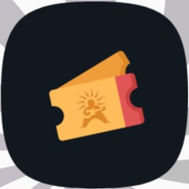
- Åbn RF Scanner, og scan indgangens QR-kode. Den sidder på din printede guide. Mangler den, får du den af din leder.
- Terminalen er nu klar til at scanne gæsternes billetter.
Baren og garderobenVælg kasse
- Åbn Festhallen POS, og log ind.
- Vælg den kasse (terminal), du står ved, hvis appen beder om det.
- Valget bliver gemt automatisk.
Kun lederen kan skifte kasse. Det sker under Indstillinger og Terminal.
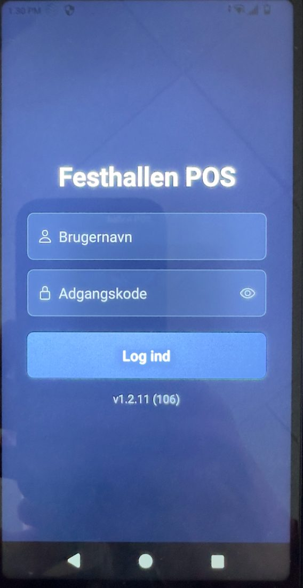
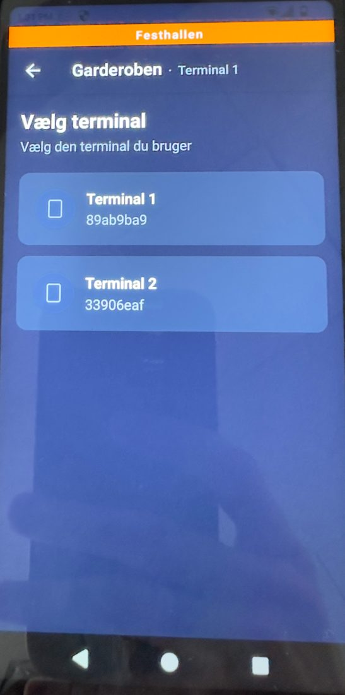
BarenSælg og tag betaling
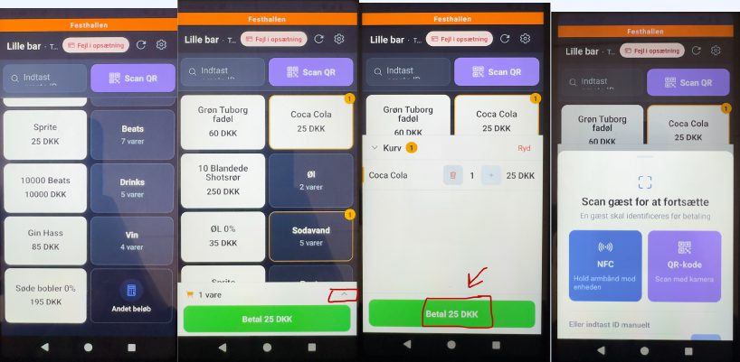
Tryk på produkterne for at tilføje dem til bestillingen. Du kan rette bestillingen med pilen op (^), før du trykker på Betal. Gæsterne skal helst betale med Beats fra deres app.
Beats fra appen
- Tilføj produkter til bestillingen.
- Tryk på Betal.
- Vælg QR.
- Scan QR-koden i gæstens app. Betalingen gennemføres.
Beats fra armbåndet
- Tilføj produkter til bestillingen.
- Tryk på Betal.
- Vælg NFC.
- Scan gæstens armbånd. Betalingen gennemføres.
Betalingskort, gæst uden appen
Har gæsten ikke appen, kan gæsten bestille og betale med betalingskort direkte på terminalen.
- Tryk på knappen for gæst uden profil.
- Tilføj produkter til bestillingen.
- Tryk på Betal.
- Vælg betaling med kort.
- Gæsten holder sit betalingskort mod terminalen. Betalingen gennemføres.
BarenOptankning af Beats
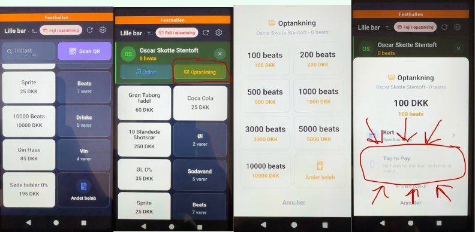
- Find gæsten øverst på salgsskærmen: tryk på Scan QR, og scan gæstens QR-kode, eller hold gæstens armbånd mod terminalen.
- Tjek sammen med gæsten, at den rigtige konto vises.
- Tryk på den gule knap Optankning under gæstens navn.
- Vælg beløb, og tryk på Tap to Pay.
- Gæsten betaler med sit betalingskort.
- Tjek, at det rigtige beløb er lagt til Beats-saldoen under gæstens navn.
BarenRefundering Kun leder
- Bed gæsten om at vente, og kontakt lederen.
- Find gæsten øverst på salgsskærmen: tryk på Scan QR, og scan gæstens QR-kode, eller hold gæstens armbånd mod terminalen.
- Tryk på den blå knap Ordrer under gæstens navn.
- Tryk på Refundér ved den ordre, der skal refunderes.
- Indtast PIN-koden. Ordren bliver refunderet.
Ved spørgsmål sender du gæsten til informationen.
GarderobenModtag og udlever tøj
Modtag tøj
- Tryk på T-shirten i øverste højre hjørne, og scan gæstens QR-kode.
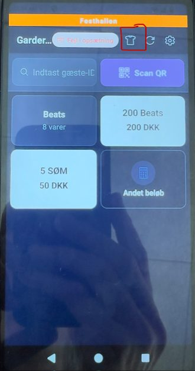
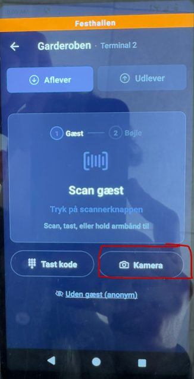
IndgangenScan en gæst
- Hold kameraet mod gæstens QR-kode. Terminalen læser den selv. Har gæsten et armbånd, holder du armbåndet tæt på terminalen.
- Se på farven på skærmen.
Kan QR-koden ikke læses, så bed gæsten om at skrue op for lysstyrken og holde telefonen stille. Er det mørkt, så tænd lommelygten nederst på skærmen.
IndgangenRød skærm ved scanning
Giver scanningen en rød skærm med en fejl, sender du gæsten til informationen. Du skal ikke selv vurdere, om gæsten må komme ind.
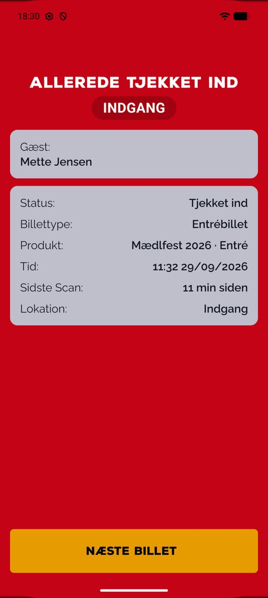
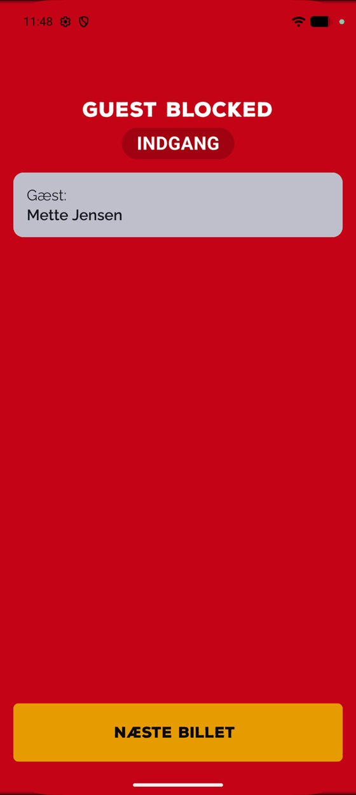
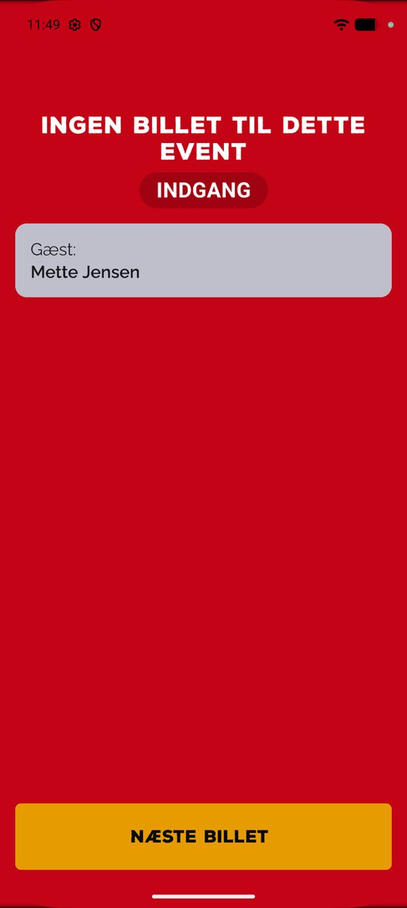
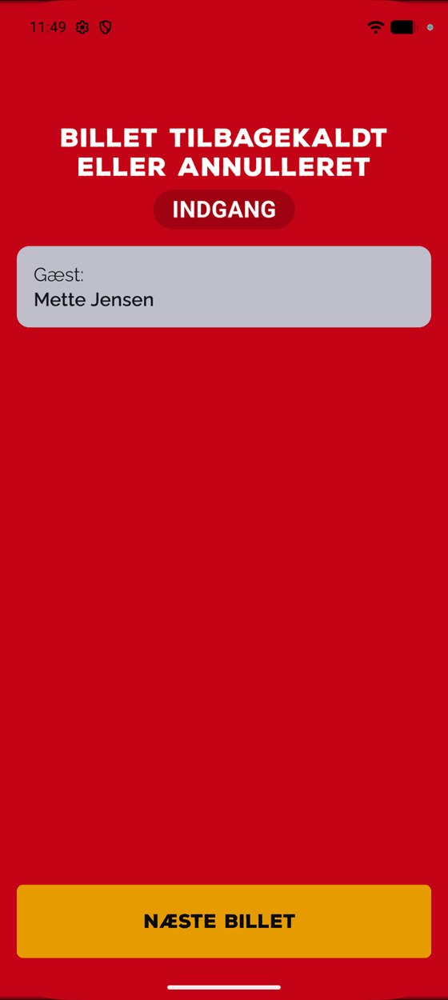
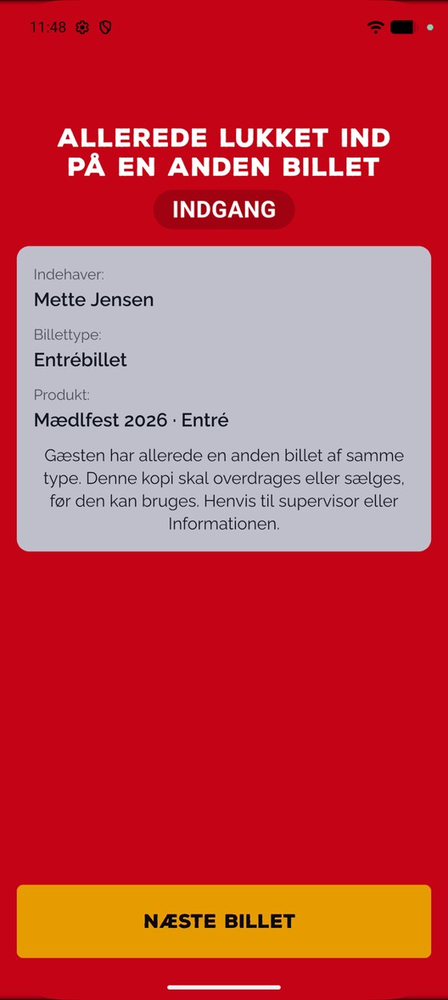
Hvis noget går galtTerminalen kan ikke bruges
Terminalen er død
- Tag batteriet ud på bagsiden, og sæt det i igen.
- Tænd terminalen med tænd/sluk-knappen i toppen.
- Er den stadig død, så byt den med en terminal fra reservepuljen i informationen.
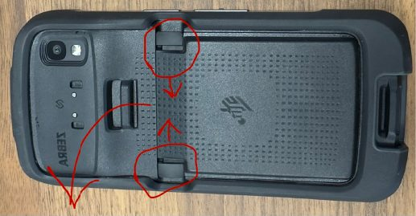
Terminalen har mistet internetforbindelsen
Terminalen viser "Offline" øverst på skærmen. Luk appen med cirklen nederst på skærmen, og åbn den igen. Hjælper det ikke:
- Tryk på cirklen nederst, og vælg Esper-indstillinger.
- Vælg Trådløst internet. Slå Brug Wi-Fi fra og til igen.
- Tjek, at terminalen får forbindelse til Wi-Fi.
- Hjælper det ikke, så slå Mobildata til. Den står lige under Trådløst internet.
- Er forbindelsen stadig ustabil, så byt terminalen i informationen.
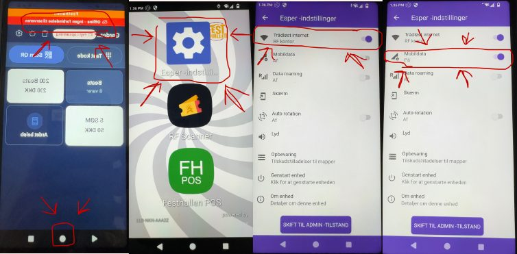
Hvis noget går galtTerminalen virker, men noget driller
"Ukendt gæst"
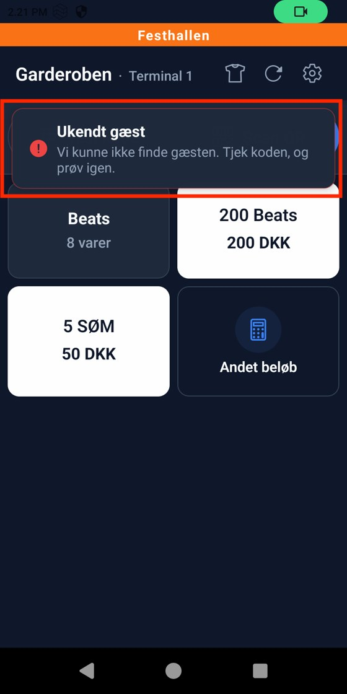
- Prøv én gang mere.
- Tjek, at gæsten er inde i Festhallen-appen og ikke i Ringsted Festival-appen.
- Kontakt lederen, eller send gæsten til informationen.
Kortet bliver afvist ved optankning
- Prøv én gang mere.
- Prøv ikke flere gange. Så kan gæsten blive trukket to gange.
- Virker det ikke, skal gæsten tanke op i sin egen app eller bruge et andet kort. Du kan også sende gæsten til informationen.
Gæsten mangler Beats
- Bed gæsten om at tanke op i sin egen app med kort, Apple Pay, Google Pay eller MobilePay.
- Kan gæsten ikke det, hjælper du med optankning på terminalen. Bagefter betaler gæsten varen med Beats. Du kan også sende gæsten til informationen.
"Noget gik galt. Prøv igen."
- Prøv igen, højst tre gange.
- Kontakt derefter lederen, eller send gæsten til informationen.
AlleNår du er færdig
Aflevér terminalen til din leder, når din vagt slutter. Lad den ikke ligge fremme.
Ved tvivl: stop, og kontakt din leder.